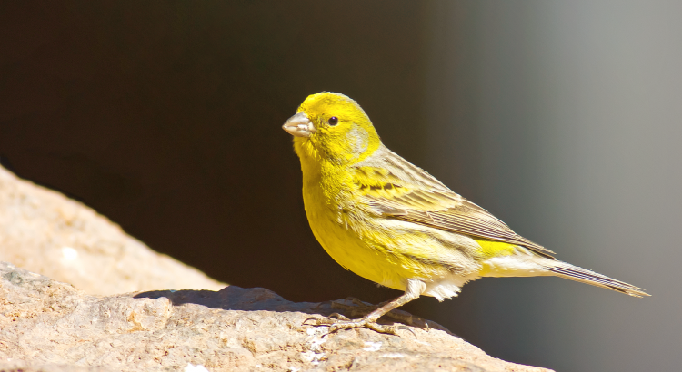

Peixe Betta
O peixe betta é um dos animais de estimação mais procurado pelas famílias
brasileiras. Afinal
de contas, ele é pequenininho e dá pouco trabalho. Afora isso, ele exige um baixo
investimento e ainda por cima tem cores e nadadeiras fantásticas.
Código: 6045129
6x de R$ 29,99 = R$ 89,99

Pássaro Canário
Colorido, companheiro e ainda por cima cantor, o pássaro canário é uma ave muito
interessante, tanto como pet como em seu habitat natural. Afinal de contas, esse é um
bichinho fácil e barato de cuidar.
Além disso, ele está muito presente nas matas brasileiras.
Código: 6907111
3x de R$ 33,33 = R$ 99,99
Porquinho da Índia
Muita gente anda pensando em ter um animal excêntrico hoje em dia, principalmente
de pequeno
porte.
Afinal, hamsters, calopsitas e tartarugas são menores, o que permite até mesmo quem mora em
apartamento a viver a incrível experiência de ter um pet.
Código: 7733221
3x de R$ 19,99 = R$ 59,99
Coelho
Eles ficam tranquilos na gaiola sozinhos durante o dia e esperam uma interação, um
carinho,
quando você chega. Eles também podem se dar bem com cães e gatos. Higiênicos- Eles defecam
tanto quanto comem – o tempo todo.
Mas são bem disciplinados e aprendem fácil a usar o banheirinho.
Código: 6543220
3x de R$ 26,99 = R$ 79,99
Gato
Gatos são animais extremamente limpos e higiênicos e, por isso, o cantinho da casa
onde fazem
sua alimentação precisa estar sempre bem organizado.Cada vez mais famílias têm um felino em
casa. Afinal, eles são mais independentes e geram menos despesas para os tutores.
Código: 6543220
3x de R$ 26,99 = R$ 79,99

Cachorro
Quem tem paixão pelos cães sabe bem: passear com o cachorro é muito importante.
Afinal, essa
voltinha diária ao lado do dono serve para relaxar, exercitar o corpo e desenvolver o
olfato.
Código: 6243228
6x de R$ 266,66 = R$ 1.599,99
Calopsita
Criar um bichinho exótico é uma delícia e uma grande aventura para família. Essa
ave certamente trará formidáveis experiências porém elas são lindas, fofas, geralmente muito
dóceis e ainda por cima não ocupam muito espaço nem causam muitas despesas em seus cuidados.
Código: 6935101
6x de R$ 83,33 = R$ 249,99